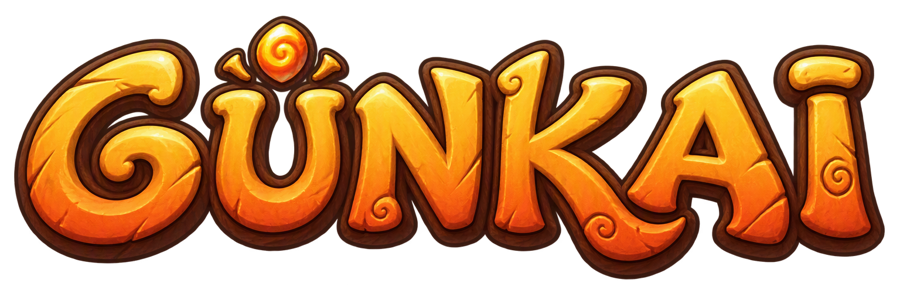
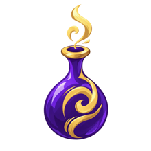
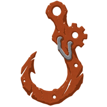
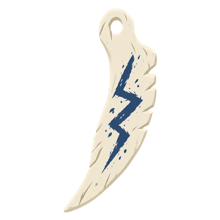
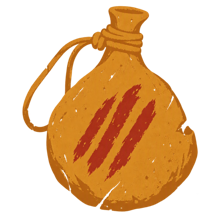
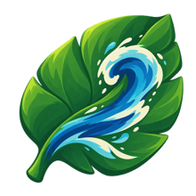
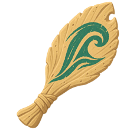
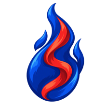
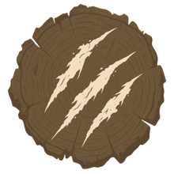
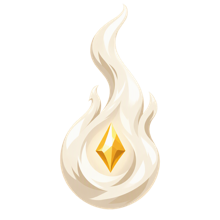

Dix peuples. Une seule table ronde. Négociez, trahissez, conquérez : chaque décision se paie.
Télécharger pour WindowsRejoindre le DiscordUn jeu de stratégie diplomatique asynchrone, des combats tactiques au tour par tour, et un monde où le Conseil des 11 observe tout.
Alliances, pactes, lettres scellées, rumeurs. Trahir un allié peut rapporter gros, et coûter plus cher encore.
Un chef, un bataillon, des sorts par école. Chaque affrontement se joue case par case, au tour par tour.
Explorez, revendiquez des terres libres, affrontez les gardiens, posez vos avant-postes. Certaines zones sont sûres, d'autres pas.
Un chef vaincu peut être épargné… ou exécuté. Savoir négocier peut vous sauver la vie.
Chaque peuple a son territoire, ses sorts, ses métiers et ses secrets.

AttarDésert et odorat
SufarFerrailleurs des faubourgs
SaivoToundra et lacs gelés
KarruBadlands, gardiens de routes
ManavaCôtes tropicales
VakaArchipels, pêcheurs-marchands
KagerōForêts de bambous
KoroboForêts brumeuses
EldirCité-état neutreUn seul fichier, aucune installation.